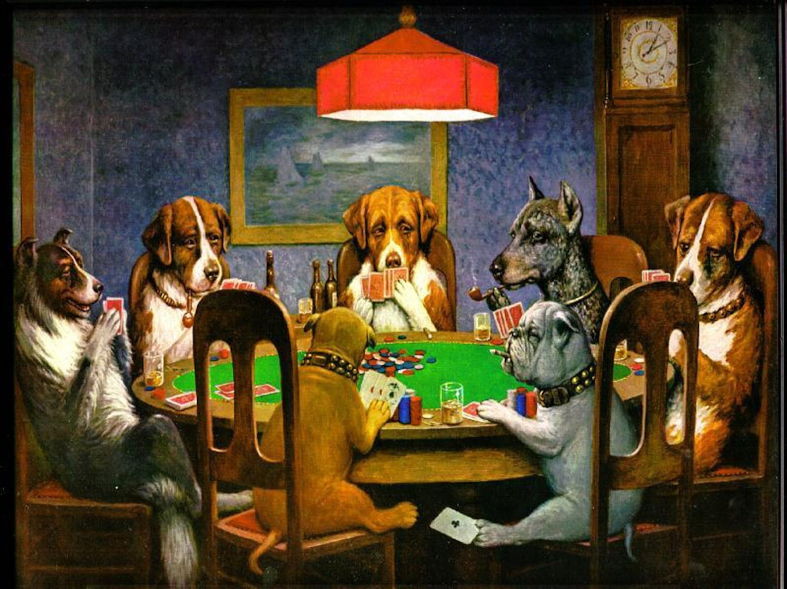

About
This page is about one of the most popular and world's most excicting and incredable game - Texas Hold'em. This is most popular variant of poker. Although little is known about the invention of Texas hold 'em, the Texas Legislature officially recognizes Robstown, Texas, as the game's birthplace, dating it to the early 1900s. If you want to learn how to play and win in Texas Hold'em visit Rules section. This website has also verison.
See normal verion withh css and without old tags What is poker?
Poker is a family of card games that combines gambling, strategy and different skills.
Best variant is Seven Stud Poker Texas Hold'em
Quotations
There is more to poker than life. — Tom McEvoy
Limit poker is a science, but no-limit is an art. In limit, you are shooting at a target. In no-limit, the target comes alive and shoots back at you. — Crandell Addington
It’s not whether you won or lost, but how many bad beat stories you were able to tell. — Grantland Rice
Rules
Texas Hold’em is played using a standard 52 card deck, and between two to ten players. Big tournaments may include many hundreds of players but during any one hand, the player is only competing against others on his or her table. Before every hand, one player is designated the nominal “dealer”, identified by a marker known as the dealer button or “button”. This person does not actually deal the cards – especially not online, where it is done automatically – but the position of the dealer determines which two players have to post the “blind” bets that get the action started. For more visit
Contact
Visit normal website:home page
Box 564, Disneyland
USA